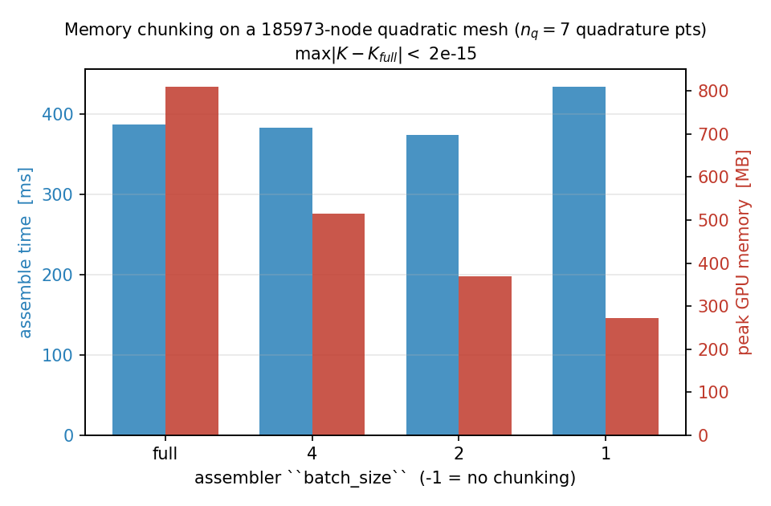

批量化工作流¶
在 TensorMesh 中，“batch”有三种不同的含义，它们作用于流水线的不同层级。为你的问题挑对其中之一，比一次性拧动所有旋钮更重要。本章先逐一介绍这三个维度，再给出经典的“同一网格、多个源项”方案，并附上在开发工作站上实测的端到端数据。
批量化的三个维度¶
维度 |
所在位置 |
何时使用 |
|---|---|---|
内存分块 |
|
单次装配超出 GPU 内存。 |
批量右端项 |
|
多个载荷、一个网格、一个刚度矩阵。 |
多问题数据集 |
机器学习训练数据：大量 |
没有内置的功能：跨多个参数取值对 K 的构造进行向量化的 vmap 式装配。如果你需要这一点，可以在 Python 里循环，或手动用 torch.vmap 包住你的装配器调用——参见下文的 尚未内置的功能。
维度 1 —— 用 batch_size 进行内存分块¶
单次 ElementAssembler 调用会把逐单元、逐求积点的被积函数张量保存在内存中。对于细网格或高阶单元，这个张量可能过大。batch_size 参数将求积维度切分成若干块，逐块累加贡献：
K = LaplaceElementAssembler.from_mesh(mesh)(batch_size=4)
其结果与不分块的调用逐比特一致（在机器精度意义下）—— batch_size 纯粹是一个内存旋钮。默认值为 -1（不分块，在内存允许时最快）。
下图在 GPU 上、对一张约含 \(1.9\times10^{5}\) 个节点的二阶三角形网格装配同一个算子，求积阶数为 5（每个单元 \(n_q = 7\) 个求积点）。将 batch_size 从完整被积函数一路缩小到每次只算一个求积点，可将峰值内存从 810 MB 降至 271 MB——降低为原来的三分之一——而几乎不增加额外时间：
{kind=link}

图 13 二阶三角形网格（185 973 个节点，\(n_q = 7\)）上，装配时间（蓝色）与峰值 GPU 内存（红色）随 batch_size 分块旋钮的变化。峰值内存从 810 MB（不分块）降至 271 MB（每块一个求积点）；每一种设置所产生的刚度矩阵，与不分块的参考结果在最大范数下相差不超过 \(2 \times 10^{-15}\)。¶
有两点会限制这个旋钮的效果——也解释了为何一个粗心的基准测试看起来可能毫无变化：
只有当
batch_size\(< n_q\) 时它才起作用。 由于n_batch = ceil(n_q / batch_size)，任何不小于求积点数的batch_size都会塌缩为单一块——也就是完全不分块。在默认求积阶数下，二阶三角形仅有 \(n_q = 3\) 个求积点，因此可供分块的空间极小；提高求积阶数（或使用高阶 / 向量单元）会增大临时被积函数，给这个旋钮更多发挥余地——这正是上图采用 5 阶的原因。存在一个它无法触及的下限。 装配后的矩阵值、它们的
int64行/列索引缓冲区，以及逐单元累加器[n_elem, n_basis, n_basis]都与单元数成正比，无论batch_size取何值都常驻内存。只有当临时被积函数[n_elem, n_q, n_basis, n_basis]是占主导的分配时，分块才有收益；单纯放大网格本身无济于事，因为这个下限会随之增长。
一个典型做法：从默认值开始；如果出现 OOM（内存不足），就把 batch_size 减半（一直降到 1），直到装配能够装下。
这个维度与跨问题的批量化毫无关系。其结果是一个矩阵，而非一批矩阵。
备注
batch_size 在单个设备上对一次装配进行分块。当刚度矩阵即便分块后仍大到无法在单个 GPU 上容纳时，TensorMesh 还提供了一条多 GPU 分布式装配路径——目前是 beta / 研究级特性；其构件参见 分布式 FEM。未来的某个版本会让分布式装配与 torch-sla 中的分布式线性求解器对齐，从而在真正大规模自由度数上实现端到端闭环。
维度 2 —— 批量右端项¶
当你拥有一个刚度矩阵 K 和许多载荷向量 b_i 时，把这些载荷堆叠成单个 [n_dof, n_batch] 张量，一次性把整块交给 K.solve：
B = torch.stack([b_1, b_2, ..., b_64], dim=1) # [n_dof, 64]
X = K.solve(B) # [n_dof, 64]
SparseMatrix.solve 会委托给 torch-sla，后者根据矩阵性质和设备来选择后端与方法——而非根据右端项的形状（一维和二维右端项走的是同一条路径）。对于凝聚后的泊松算子，这意味着一次直接分解：CPU 上用 SuperLU（scipy，method="lu"），GPU 上用 cuDSS（SPD 矩阵用 method="cholesky"，对称不定矩阵用 "ldlt"）。在直接法下，传入二维右端项可让后端只分解一次 ``K``、然后对每一列回代——这正是你在此处想要的收益。相比用 Python 循环逐个独立求解，无论在 CPU 还是 GPU 上加速都十分显著，并随 n_batch 增长，直到回代开始占主导：

图 14 在一张 3014 个节点的泊松网格上的单问题耗时：调用 tensormesh.sparse.SparseMatrix.solve() n_batch 次的 Python 循环（虚线）对比单次二维右端项调用（实线）。在 GPU 上，当 n_batch = 256 时加速达到 225x。¶
结论可以从图中清晰读出。循环正好是 n_batch 次独立求解，因此 x 轴每跳一格其墙钟时间就翻一倍。二维右端项调用只分解一次 K，并将这一开销摊销到每一列上；在 GPU 上，直到 n_batch = 256，其耗时都保持在单右端项耗时的 \(\sim 15\%\) 以内。
备注
“分解一次再摊销”是直接法后端的特性。如果转而运行某种迭代法——超大规模的 GPU 问题会被路由到原生 PyTorch 的 CG，或者你显式传入 method="cg" / "bicgstab"——torch-sla 会在内部对二维右端项的各列做循环，因此没有可复用的分解，相比 Python 循环唯一的收益就是减少了每次调用的分派开销。torch-sla 目前尚不缓存迭代求解器状态（即跨右端项复用的预条件子或 Krylov 基）；带缓存的迭代求解器已列入未来版本的计划。后端与方法的选择方式参见 稀疏求解器。
吞吐量是同一组数据的另一种呈现——每秒求解的问题数：

图 15 以每秒问题数表示的吞吐量。CPU 路径在大约 \(5 \times 10^{3}\) 个问题每秒处使 SuperLU 回代达到饱和；GPU 则持续攀升，在 n_batch = 1024 时接近 \(3 \times 10^{4}\) 个问题每秒。¶
凝聚的工作方式相同。condense_rhs() 接受 [n_dof, ...] 形状——前导的自由度轴会被切片，而后续各轴原样透传：
condenser = Condenser(mesh.boundary_mask)
K_, _ = condenser(K, torch.zeros(mesh.n_points))
B_inner = condenser.condense_rhs(B) # [n_inner, 64]
X_inner = K_.solve(B_inner) # [n_inner, 64]
X_full = condenser.recover(X_inner) # [n_dof, 64]
这是机器学习训练数据生成的主力模式，也适用于每个问题都共享同一几何的参数化研究。
维度 3 —— 多问题数据集¶
对于需要大量 (input, output) 对的机器学习工作负载，tensormesh.dataset 打包了两样东西：
MeshGen—— 由 CSG 基元（矩形、圆、孔洞等）程序化生成、以 Gmsh 为后端的网格。多频方程类，可生成带有已知解析解的批量源项，用于监督训练：
PoissonMultiFrequency（以及…3D）LinearElasticityMultiFrequency（以及…3D）
每个 …MultiFrequency 类都会为源项采样随机傅里叶系数，并在适用时返回相同节点上的解析解，这对训练和验证都很方便。
标准的“同一网格、变化源项”方案，将这个生成器与维度 2 的批量右端项模式结合起来：
import torch
from tensormesh import Mesh, LaplaceElementAssembler, MassElementAssembler, Condenser
from tensormesh.dataset import PoissonMultiFrequency
device = "cuda" if torch.cuda.is_available() else "cpu"
mesh = Mesh.gen_rectangle(chara_length=0.02).to(device)
K = LaplaceElementAssembler.from_mesh(mesh)().double()
M = MassElementAssembler.from_mesh(mesh)().double()
condenser = Condenser(mesh.boundary_mask)
K_, _ = condenser(K, torch.zeros(mesh.n_points, device=device))
# 1024 random Poisson source terms, all evaluated at the same nodes.
eq = PoissonMultiFrequency(a=torch.rand(1024, 8, 8, device=device) * 2 - 1)
f = eq.source_term(mesh.points, domain="rectangle").double() # [1024, n_points]
b = M @ f.T # [n_points, 1024]
b_ = condenser.condense_rhs(b) # [n_inner, 1024]
u_ = K_.solve(b_) # [n_inner, 1024]
u = condenser.recover(u_) # [n_points, 1024]
在单块 RTX PRO 6000 上，上面的循环大约用 34 ms 产生 1024 个泊松解（见上方的吞吐量图）——每个问题约 \(30\,\mu\mathrm{s}\)，主要耗时在 cuDSS 的三角回代上。完整基准测试的驱动脚本（含跨多个 n_batch 取值的计时）位于 examples/dataset/poisson/poisson_dataset.py。
对于网格变化的工作流，需要为每个问题重新生成 Mesh 并每次都付出装配开销——目前这种情况没有捷径。
尚未内置的功能¶
目前没有内置的 vmap 式装配器来跨多个参数取值对 K 的构造进行向量化（例如为随机系数场的每一次实现生成一个 K）。当下，用户代码中有两种可行模式：
Python 循环——最简单，当装配相对于求解开销较小时完全够用。
用 ``torch.vmap`` 包住装配器调用——当变化的参数通过
point_data或element_data传入、且结果形状一致时可用。请注意vmap与稀疏输出的配合较为脆弱；请先在小问题上测试。
未来的某个版本可能会出现一等公民级别的批量装配 API；即便没有它，上文的数据集工作流也已涵盖了最常见的情形（同一网格、多个源项）。
复现这些数据¶
本页的三幅图均来自同一个脚本：
python docs/scripts/batched_workflows_figures.py
它仅使用公开 API，且可仅在 CPU 上运行（在纯 CPU 机器上会跳过 GPU 相关的图）。在 CUDA 主机上，它会将 batched_rhs_scaling.png、throughput.png 和 memory_chunking.png 写入 docs/source/_static/user_guide/batched_workflows/。